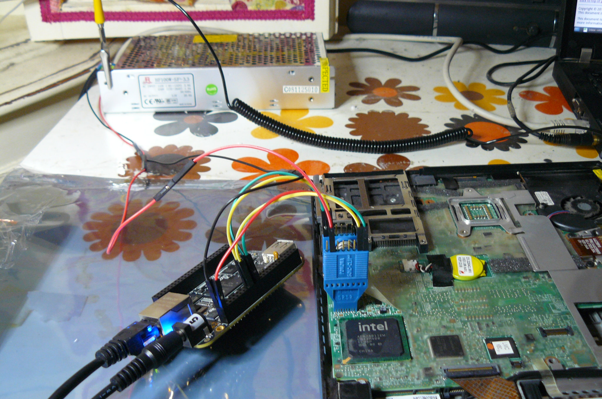
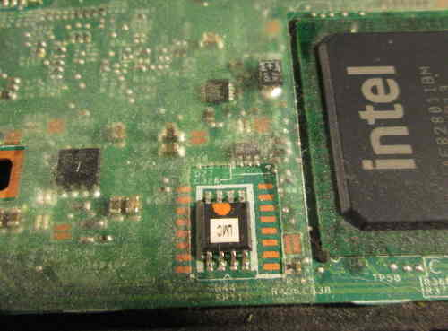
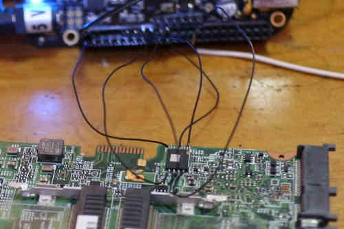
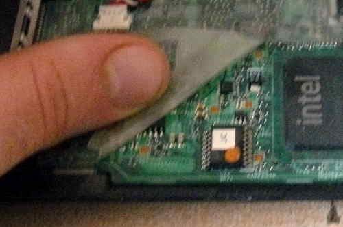
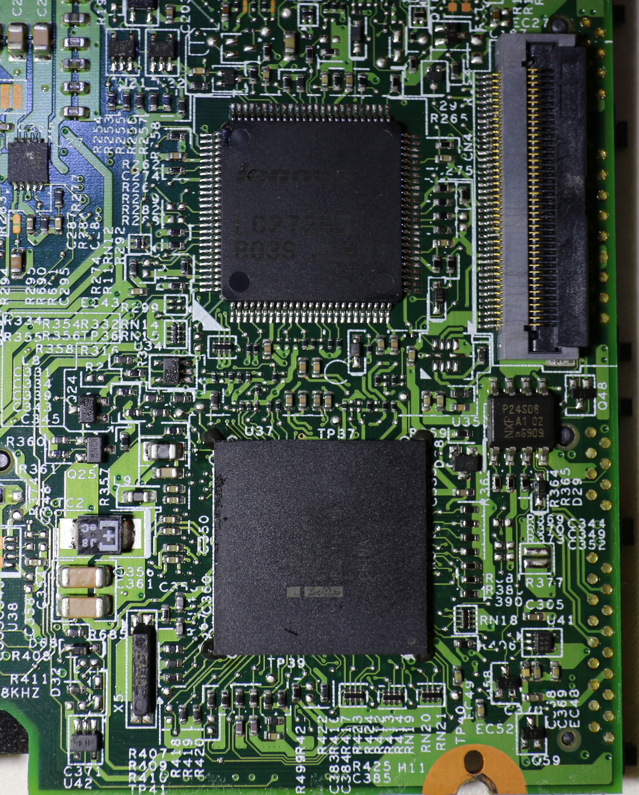

Initial BBB configuration
Refer to bbb_setup.html for how to
set up the BBB for flashing.
The following shows how to connect the clip to the BBB (on the P9 header), for SOIC-16 (clip: Pomona 5252):
POMONA 5252 (correlate with the BBB guide)
=== front (display) on your X200 ====
NC - - 21
1 - - 17
NC - - NC
NC - - NC
NC - - NC
NC - - NC
18 - - 3.3V (PSU)
22 - - NC - this is pin 1 on the flash chip
=== back (palmrest) on your X200 ===
This is how you will connect. Numbers refer to pin numbers on the BBB, on the plugs near the DC jack.
Here is a photo of the SOIC-16 flash chip. Pins are labelled:

The following shows how to connect the clip to the BBB (on the P9 header), for SOIC-8 (clip: Pomona 5250):
POMONA 5250 (correlate with the BBB guide)
=== left side of the X200 (where the VGA port is) ====
18 - - 1
22 - - NC
NC - - 21
3.3V (PSU) - - 17 - this is pin 1 on the flash chip. in front of it is the screen.
=== right side of the X200 (where the audio jacks are) ===
This is how you will connect. Numbers refer to pin numbers on the BBB, on the plugs near the DC jack.
Here is a photo of the SOIC-8 flash chip. The pins are labelled:

Look at the pads in that photo, on the left and right. Those are for SOIC-16. Would it be possible to remove the SOIC-8 and solder a SOIC-16
chip on those pins?
On the X200S and X200 Tablet the flash chip is underneath the board, in a WSON package.
The pinout is very much the same as a SOIC-8, except you need to solder (there are no clips available).
The following image shows how this is done:

In this image, a pin header was soldered onto the WSON. Another solution might be to de-solder the WSON-8 chip and put a SOIC-8 there instead.
Check the list of SOIC-8 flash chips at ../hcl/gm45_remove_me.html#flashchips but
do note that these are only 4MiB (32Mb) chips. The only X200 SPI chips with 8MiB capacity are SOIC-16. For 8MiB capacity in this case,
the X201 SOIC-8 flash chip (Macronix 25L6445E) might work.
The procedure
This section is for the X200. This does not apply to the X200S or X200 Tablet
(for those systems, you have to remove the motherboard completely, since
the flash chip is on the other side of the board).
Remove these screws:

Push the keyboard forward, gently, then lift it off and
disconnect it from the board:


Pull the palm rest off, lifting from the left and right side at the back of the
palm rest:

Lift back the tape that covers a part of the flash chip, and
then connect the clip:


On pin 2 of the BBB, where you have the ground (GND), connect the
ground to your PSU:


Connect the 3.3V supply from your PSU to the flash chip (via
the clip):


Of course, make sure that your PSU is also plugged in and
turn on:

This tutorial tells you to use an ATX PSU, for the 3.3V DC
supply. The PSU used when taking these photos is actually
not an ATX PSU, but a PSU that is designed specifically
for providing 3.3V DC (an ATX PSU will also work):

Now, you should be ready to install libreboot.
Flashrom binaries for ARM (tested on a BBB) are distributed in libreboot_util. Alternatively,
libreboot also distributes flashrom source code which can be built.
Log in as root on your BBB, using the instructions in
bbb_setup.html#bbb_access.
Test that flashrom works:
# ./flashrom -p linux_spi:dev=/dev/spidev1.0,spispeed=512
In this case, the output was:
flashrom v0.9.7-r1854 on Linux 3.8.13-bone47 (armv7l)
flashrom is free software, get the source code at http://www.flashrom.org
Calibrating delay loop... OK.
Found Macronix flash chip "MX25L6405(D)" (8192 kB, SPI) on linux_spi.
Found Macronix flash chip "MX25L6406E/MX25L6436E" (8192 kB, SPI) on linux_spi.
Found Macronix flash chip "MX25L6445E/MX25L6473E" (8192 kB, SPI) on linux_spi.
Multiple flash chip definitions match the detected chip(s): "MX25L6405(D)", "MX25L6406E/MX25L6436E", "MX25L6445E/MX25L6473E"
Please specify which chip definition to use with the -c <chipname> option.
How to backup factory.rom (change the -c option as neeed, for your flash chip):
# ./flashrom -p linux_spi:dev=/dev/spidev1.0,spispeed=512 -r factory.rom
# ./flashrom -p linux_spi:dev=/dev/spidev1.0,spispeed=512 -r factory1.rom
# ./flashrom -p linux_spi:dev=/dev/spidev1.0,spispeed=512 -r factory2.rom
Note: the -c option is not required in libreboot's patched flashrom, because
the redundant flash chip definitions in flashchips.c have been removed.
Now compare the 3 images:
# sha512sum factory*.rom
If the hashes match, then just copy one of them (the factory.rom) to a safe place (on a drive connected to another system, not
the BBB). This is useful for reverse engineering work, if there is a desirable behaviour in the original firmware
that could be replicated in coreboot and libreboot.
Follow the instructions at ../hcl/gm45_remove_me.html#ich9gen
to change the MAC address inside the libreboot ROM image, before flashing it.
Although there is a default MAC address inside the ROM image, this is not what you want. Make sure
to always change the MAC address to one that is correct for your system.
Now flash it:
# ./flashrom -p linux_spi:dev=/dev/spidev1.0,spispeed=512 -w path/to/libreboot/rom/image.rom -V

You might see errors, but if it says Verifying flash... VERIFIED at the end, then it's flashed and should boot.
If you see errors, try again (and again, and again); the message Chip content is identical to the requested image
is also an indication of a successful installation.
Example output from running the command (see above):
flashrom v0.9.7-r1854 on Linux 3.8.13-bone47 (armv7l)
flashrom is free software, get the source code at http://www.flashrom.org
Calibrating delay loop... OK.
Found Macronix flash chip "MX25L6405(D)" (8192 kB, SPI) on linux_spi.
Reading old flash chip contents... done.
Erasing and writing flash chip... FAILED at 0x00001000! Expected=0xff, Found=0x00, failed byte count from 0x00000000-0x0000ffff: 0xd716
ERASE FAILED!
Reading current flash chip contents... done. Looking for another erase function.
Erase/write done.
Verifying flash... VERIFIED.
Back to top of page.
X200S and X200 Tablet users: GPIO33 trick will not work.
sgsit found out about a pin called GPIO33, which can be grounded to disable the flashing protections
by the descriptor and stop the ME from starting (which itself interferes with flashing attempts).
The theory was proven correct; however, it is still useless in practise.
Look just above the 7 in TP37 (that's GPIO33):

By default we would see this in lenovobios, when trying flashrom -p internal -w rom.rom:
FREG0: Warning: Flash Descriptor region (0x00000000-0x00000fff) is read-only.
FREG2: Warning: Management Engine region (0x00001000-0x005f5fff) is locked.
With GPIO33 grounded during boot, this disabled the flash protections as set
by descriptor, and stopped the ME from starting. The output changed to:
The Flash Descriptor Override Strap-Pin is set. Restrictions implied by
the Master Section of the flash descriptor are NOT in effect. Please note
that Protected Range (PR) restrictions still apply.
The part in bold is what got us. This was still observed:
PR0: Warning: 0x007e0000-0x01ffffff is read-only.
PR4: Warning: 0x005f8000-0x005fffff is locked.
It is actually possible to disable these protections. Lenovobios does,
when updating the BIOS (proprietary one). One possible way to go about this
would be to debug the BIOS update utility from Lenovo, to find out
how it's disabling these protections. Some more research is available here:
http://www.coreboot.org/Board:lenovo/x200/internal_flashing_research
On a related note, libreboot has a utility that could help with investigating this:
../hcl/gm45_remove_me.html#demefactory